Seniors Session 1
Bash Scripting
A.K.A. Finishing the Advanced Computer Lab in one slot 101
Advanced Computer Lab
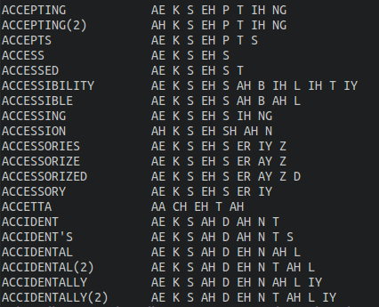
Creating 100 directories?
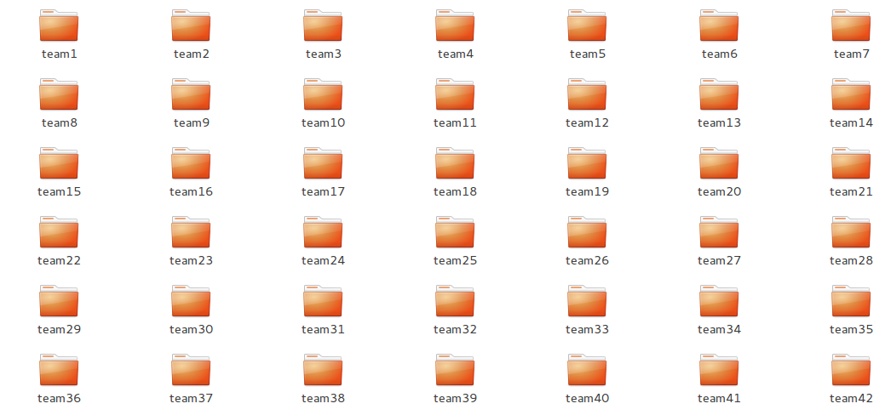 Also a bash one linerListing the movies you have
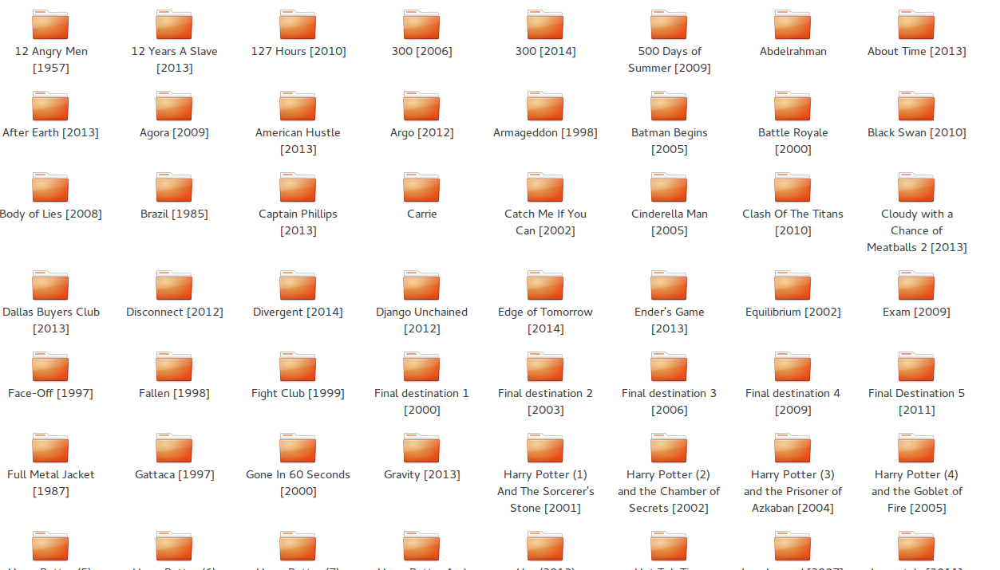 Also a bash one linerWhy to learn Bash?
- Automating some of the tasks you'll face.
- Makes your life much easier when using ubuntu's terminal.
- Remote Sessions on Servers.
- It looks cool!
You can do literally anything you can do with the mouse using the terminal.
Ok, Let's start
Outline
- Navigating The File System
- Some useful commands
- Redirections
- Piping
- Live Examples
- Writing Scripts
Command Structure
$ echo -e -n "Hello World"
- echo : The command we are running
- -e -n : The command flags and options
- "Hello World" : The command arguments
Filesystem Structure
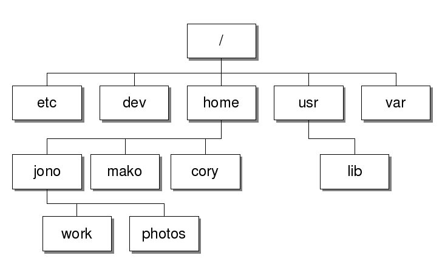
Image Source : Here
Relative Paths
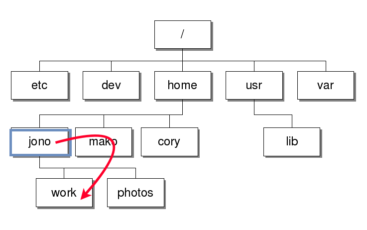
$ cd work
Absolute Paths
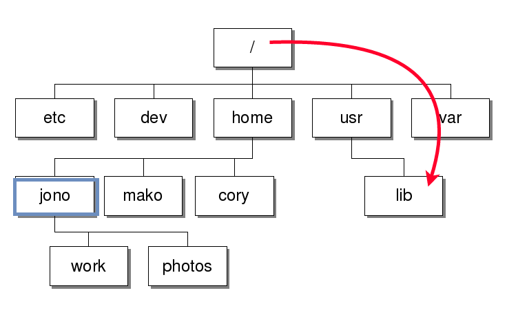
$ cd /usr/lib
Up
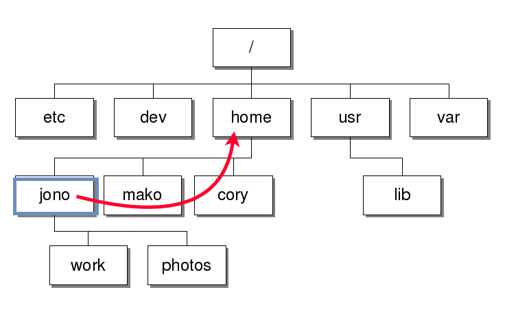
$ cd ..
Another example
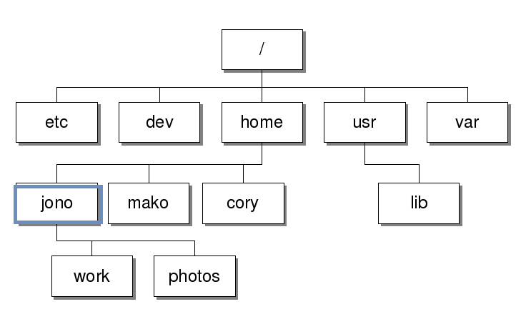
$ cd usr/lib # Error, why?
Another example
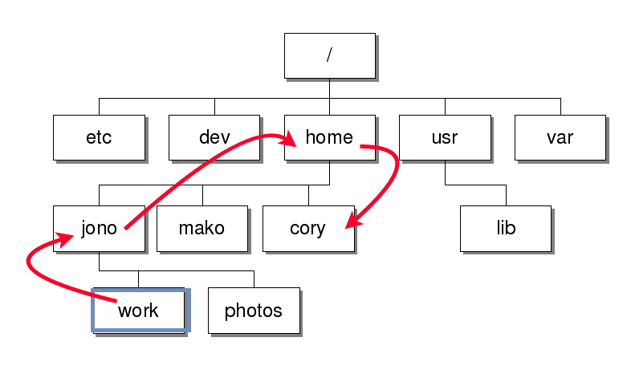
$ cd ../../cory
Useful commands
pwd : Prints the absolute path of the current directory
$ pwd
/home/mohamedbassem/Desktop
ls : Lists all the files/directories in a directory
$ ls
file1.html file2.html hello.sh
cp : Copies a file/directory to a certain destination
$ cp file.html html/file.htmlUseful commands
mv : Moves a file/directory to a certain destination
$ mv file.html html/file.html
$ mv file1.html index.html # Renaming?
echo : Prints the arguments it takes with a trailing new line
$ echo "Hello World"
Hello World
cat : Prints the content of a certain file
$ cat hello.txt
Hello I'm a file.
And apparently I'm not empty.
...Useful commands
rm : removes one or more files/directories
$ rm file.html file2.html
mkdir : Creates one or more directories.
$ mkdir tests logs
curl : Issues an HTTP request to a certain endpoint and prints the response to stdout
$ curl http://google.comSort
Sorts the content of the file lexicographically by default.
To sort numerically you add the -n flag.
To sort by a certain column use the -k flag.
To sort numerically you add the -n flag.
To sort by a certain column use the -k
$ cat tmp.txt
1 Mohamed
3 Ahmed
2 Zaky$ sort -n -k 1 tmp.txt
1 Mohamed
2 Zaky
3 Ahmed$ sort -k 2 tmp.txt
3 Ahmed
1 Mohamed
2 ZakyUniq
Uniq removes duplicate ADJECENT lines. To get uniq lines in the whole file usually we sort the file first.
$ cat tmp.txt
2
2
10
4
4
$ uniq tmp.txt
2
10
4grep
grep prints only lines in the files that match partially or completely a certain pattern.
cat tmp.txt
SOME
RANDOM
WORDS
HELLOgrep "OM" tmp.txt
SOME
RANDOM
Using the -v flag will filter out the lines matching the pattern.
grep -v "OM" tmp.txt
WORDS
HELLO
sed
We usually use sed for replacing patterns but it's much much more than this.
cat tmp.txt
SOME
RANDOM
WORDS
HELLOOOsed 's/O/N/g' tmp.txt
SNME
RANDNM
WNRDS
HELLNNNOther Worth Mentioning Commands
- head
- tail
- awk
- touch
- wc
How can I remember all those flags?
You don't need to!Help and Man pages
Most of the commands comes with a flag called "--help" or "-h" that will print how to use it. For example
$ grep --help
Usage: grep [OPTION]... PATTERN [FILE]...
Search for PATTERN in each FILE or standard input.
PATTERN is, by default, a basic regular expression (BRE).
Example: grep -i 'hello world' menu.h main.c
...
Most of those commands have also a manual that you can access by:
$ man echoRedirections
Processes
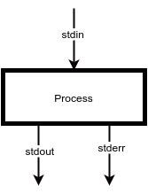
The three default "files" each process has:
- stdin(0): What you write in the terminal.
- stdout(1): What gets printed in the console. (e.g. System.out.println())
- stderr(2): Also printed in the console but indicates error. In eclipse for example it's printed in red. (e.g. Exceptions & System.err.println())
Redirections
# Redirect the output of the command to out.txt
$ echo "Hello World" 1> out.txt
# Redirect stderr to /dev/null (Discard it)
$ some-command 2> /dev/null
# Replace stdin with a file
$ grep "pattern" 0< file.txt
# Appending to the file
$ echo "Hello World" 1>> out.txt
# Ignore any output/error from the command
$ some-command 1> /dev/null 2>&1
Note: You don't have to write the descriptor number in case of stdout and stdin and usually we don't write them. So use ">" and "<" directly for redirecting stdout and stdin respectively.

Piping
Piping
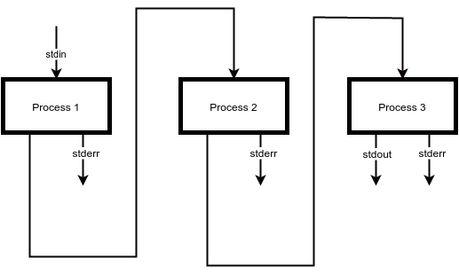
Piping is a special type of redirection where stdout of a process is redirected to the stdin of another process.
Piping Example
Print all the files ending with ".txt" in the current directory
$ ls
file.ext game.ext README.md test.txt example.txt
$ ls | grep "\.txt$"
test.txt
example.txtBack to our example
Advanced Computer Lab Revisited
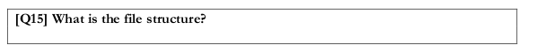
What tools do we have?
- Printing Files.
- Filter out lines matching a pattern.
- Replacing patterns.
- Removing columns.
- Sorting
- Uniq
- Taking the first/last n lines from a file
Let's do it live.
Another Live Example
Assume you have the following CSV hosted here that represents the grades of some students in the class. Print the name of student with the highest grade, for simplicity assume that there won't be two students with the same grade.
name,percentage
Ahmed,30
Mohamed,60
Khaled,20
Yusuf,80
Noha,0
So3ad,90
What about writing it to a file instead of printing it?
Bash scripts
Variables and Conditions
#!/bin/bash
VAL=$((1+2));
if [ $VAL -eq 3 ]; then
echo "YES 3";
elif [ $VAL -lt 1 ]; then
echo "YES LESS THAN 1";
else
echo "NO IDEA";
fiLoops
#!/bin/bash
NUMBER=1;
while [ $NUMBER -lt 10 ]; do
echo "Number = $NUMBER"
NUMBER=$((NUMBER + 1))
done
# Until also works
VAL="1 2 X 4"; # `ls` maybe ?
for i in $VAL; do
echo $i;
doneFunctions
#!/bin/bash
function greet {
echo "Hello $1"
}
greet MohamedCommand line arguments and Function params are accessed by the special variable $[number].
Execution
Usually bash scripts have ".sh" file extension or no extension at all. Remember the Shebang?
In order to execute you'll have to make the file executable first.
In order to execute you'll have to make the file executable first.
# We will understand this command in a later session
$ sudo chmod u+x script.sh
$ ./script.sh # That's a relative path
Exit Codes
How to know whether the command we just ran exited in success or failure?
#!/bin/bash
exit(0);
- Exiting with zero means sucess, anything else is failure
- You can check the exit status of the last executed command using the special var "$?"
- Remember the loop condition?
Conditions
$ type [
[ is a shell builtin
$ man [
$ [ 2 -lt 3 ]
$ echo $?
0
$ [ 2 -lt 3 ] && [ 5 -lt 3 ]
$ echo $?
1
"[" itself is a command, that takes some flags representing the condition and exits with sucess if the condition is satisfied and failure otherwise.
Expansions
$ echo test{1,3}
test1 test3
$ echo test{1..5}
test1 test2 test3 test4 test5
$ mkdir teams{1..100}
$ mv test.txt{,_old}
"[" itself is a command, that takes some flags representing the condition and exits with sucess if the condition is satisfied and failure otherwise.
Home Sweet Home
# Both will switch to the home directory
$ cd ~
$ cd
- "~" is a special alias to your home directory "/home/<username>".
- The home directory contains the Desktop, Downloads, Documents and configurations.